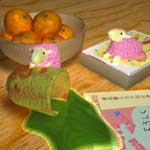

|
カヨコ |
★ コメント ★
羊の毛はモコモコして気持ちよさげです。 |
|
LOBSTER |
★ コメント ★
宝くじっぽいですけど、年賀状です。
前回のは暗すぎて見えなかったので今回は明るくしてみました。
|
 |
水琴 |
★ コメント ★
12月なのにあんなに積もった雪に感動して作りました。クリスマスカードみたいな感じです。
今度はもっと凝った作品を作るようにしたいです… |
 |
OZ |
★ コメント ★
『年賀状っぽさ』『キャラを立てない』ということを注意して作りました。
が、時間がなくて満足いくまで描けず終了………精進します…。
|
 |
セイセン |
★ コメント ★
今回はほとんど３Dソフトに頼りました。
オモチャっぽい感じを表現しようと作ってみました。成功しているかな？ |
|
しんや |
★ コメント ★
年賀状用に作った物なので白が多いが勘弁！西の君、いろいろお世話になりました！ |
|
|  |
降雪 |
★ コメント ★
羊が羊に見えればいいです。
(…見えないですか？うぅ)。
色々と後悔が。 |
 |
西の |
★ コメント ★
「年賀状」ということだったのですが、テーマ通りの絵になってないかもしれません(＾＾;それと、やっぱ俯瞰は苦手だな・・・ |
 |
サク |
★ コメント ★
テーマが年賀状なので普通に羊にしました。
正月らしくない絵柄ですみません（汗） |
 |
shell |
★ コメント ★
可愛さを追求してみました。来年は未年なんでひつじさんです。
時間の関係でありきたりな構図になってしまって少し残念。
今回は初のノートＰＣで作った作品です。ディスクトップＰＣで見たら変色してそうで怖い・・・ |
 |
夜月 星 |
★ コメント ★
今回のも仕様です。色合いの関係上除夜の鐘の鐘を描いたのですが、やばかったので削除。描いてない時点で色合いがイッパイイッパイですから。ただ、習作として今回は色々学ぶことが多かったので、私的見解では描いて良かったなと。次に反映されればいいんだーいヽ(｀д´)ノ |
|
保坂月海
|
|
★ コメント ★
毎年１枚１枚違う柄で出そうとしては自分を追い詰めています(笑)
今年もです・・・あわあわ；
|
|